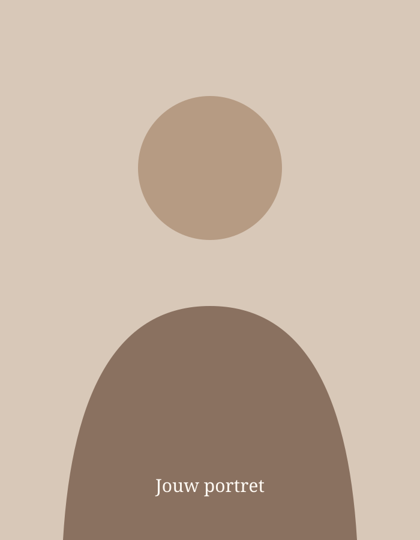
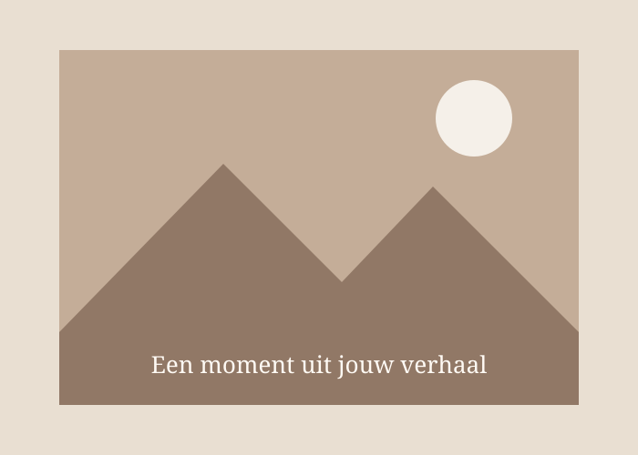

Mijn interesses
Een korte tekst over wat mij inspireert, binnen en buiten de opleiding.

Wie ben ik?
Hier komt later mijn persoonlijke verhaal. Ik vertel graag wie ik ben, wat mij interesseert en waarom ik voor de opleiding Vastgoed heb gekozen.
Ook mijn ambities, waarden en ervaringen krijgen hier een plaats.
Een korte tekst over wat mij inspireert, binnen en buiten de opleiding.
Ruimte om mijn studietraject en belangrijkste leermomenten toe te lichten.
Hier kan ik later vertellen waar ik naartoe wil en wat ik wil bereiken.
Buiten de boeken
Niet alles leer je in een klaslokaal. Deze ruimte is bedoeld voor een persoonlijke tekst over hobby's, ervaringen en momenten die mij gevormd hebben.
